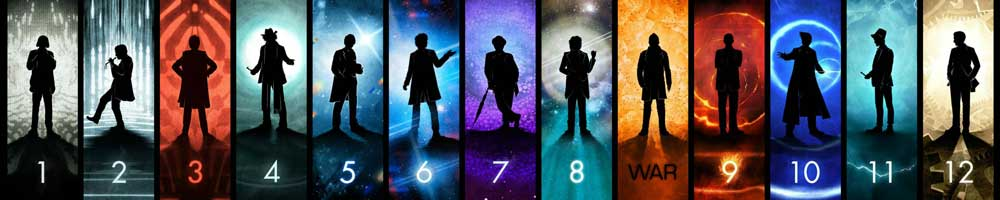

 |
| Home | The Doctors | The Companions | The Villains | Show History |
The Original SeriesDoctor Who first appeared on BBC1 television at 17:16:20 GMT, eighty seconds after the scheduled programme time, 5:15 pm, on Saturday, 23 November 1963. It was to be a regular weekly programme, each episode 25 minutes of transmission length. Discussions and plans for the programme had been in progress for a year. The head of drama, Canadian Sydney Newman, was mainly responsible for developing the programme, with the first format document for the series being written by Newman along with the head of the script department (later head of serials) Donald Wilson and staff writer C. E. Webber. Writer Anthony Coburn, story editor David Whitaker and initial producer Verity Lambert also heavily contributed to the development of the series. The programme was originally intended to appeal to a family audience, as an educational programme using time travel as a means to explore scientific ideas and famous moments in history. On 31 July 1963 Whitaker commissioned Terry Nation to write a story under the title The Mutants. As originally written, the Daleks and Thals were the victims of an alien neutron bomb attack but Nation later dropped the aliens and made the Daleks the aggressors. When the script was presented to Newman and Wilson it was immediately rejected as the programme was not permitted to contain any "bug-eyed monsters". The first serial had been completed and the BBC believed it was crucial that the next one be a success, however, The Mutants was the only script ready to go so the show had little choice but to use it. According to producer Verity Lambert; "We didn't have a lot of choice — we only had the Dalek serial to go ... We had a bit of a crisis of confidence because Donald [Wilson] was so adamant that we shouldn't make it. Had we had anything else ready we would have made that." Nation's script became the second Doctor Who serial – The Daleks (aka The Mutants). The serial introduced the eponymous aliens that would become the series' most popular monsters, and was responsible for the BBC's first merchandising boom. The BBC drama department's serials division produced the programme for 26 seasons, broadcast on BBC 1. Falling viewing numbers, a decline in the public perception of the show and a less-prominent transmission slot saw production suspended in 1989 by Jonathan Powell, controller of BBC 1. Although (as series co-star Sophie Aldred reported in the documentary Doctor Who: More Than 30 Years in the TARDIS) it was effectively, if not formally, cancelled with the decision not to commission a planned 27th series of the show for transmission in 1990, the BBC repeatedly affirmed that the series would return. |
Brendan Davey Monica DuCong'e Erik Eyler Kayleen Garcie Katie Hyche Ryan Moeller |
Christine O'Brien Alex Recinos Julia Schwartz Madeleine Schwartz Ann Marie Skjold Ashly Wilkins |
[Reference Links] |